Round 1Cars, a bus, cabins
Kept: sheet 1, and the cabin
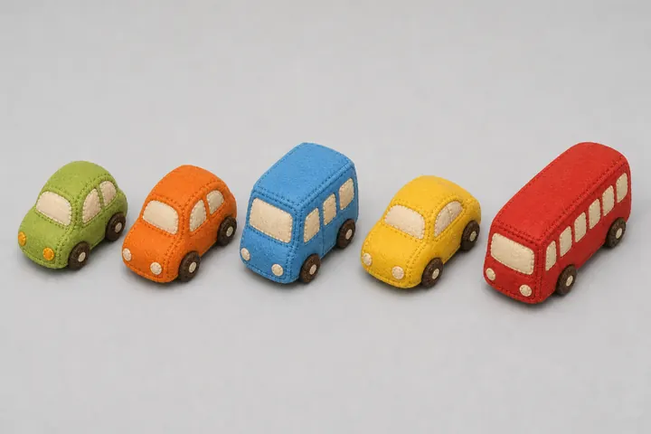
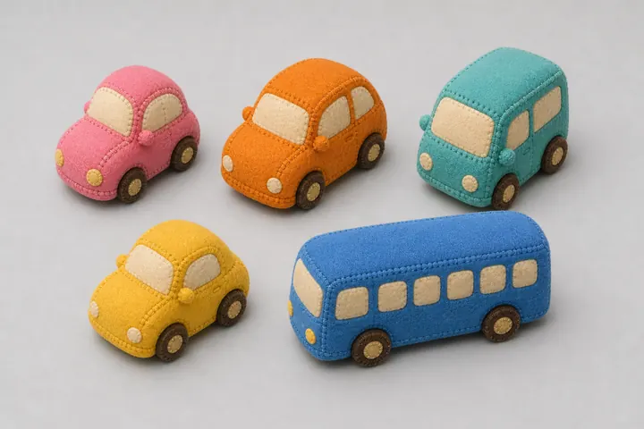
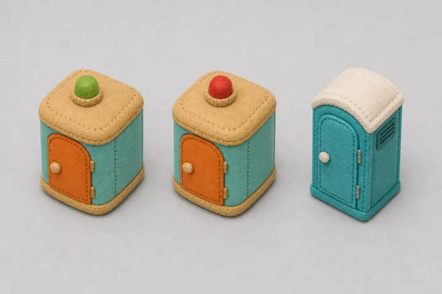
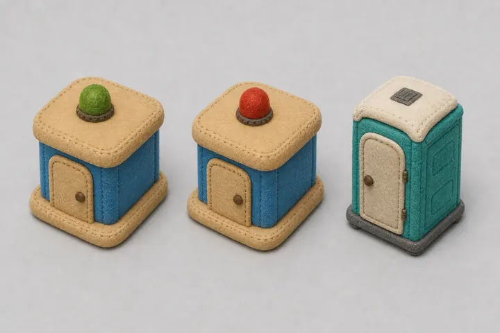
The human kept the small cars in a row with the red bus, and set the kiosks aside: no roof beacons, every toilet the teal portable cabin. Free or occupied now shows on its door, like a real cabin's latch.
Round 2One by one, then 3D
In the game
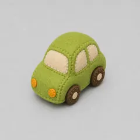
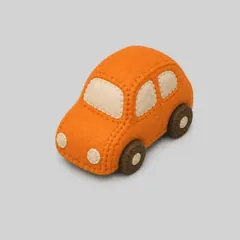
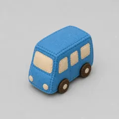
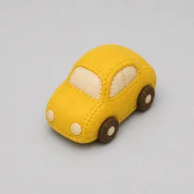
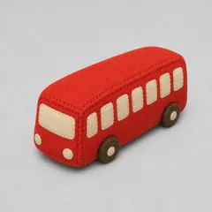
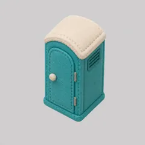
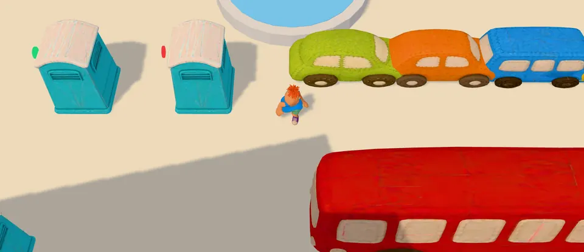
Each one stretched to the size the game drives or places it at: cars 4.2 m long, the bus 11 m, a kiosk cabin filling its 2 m notch, a pop-up 1.4 m wide.